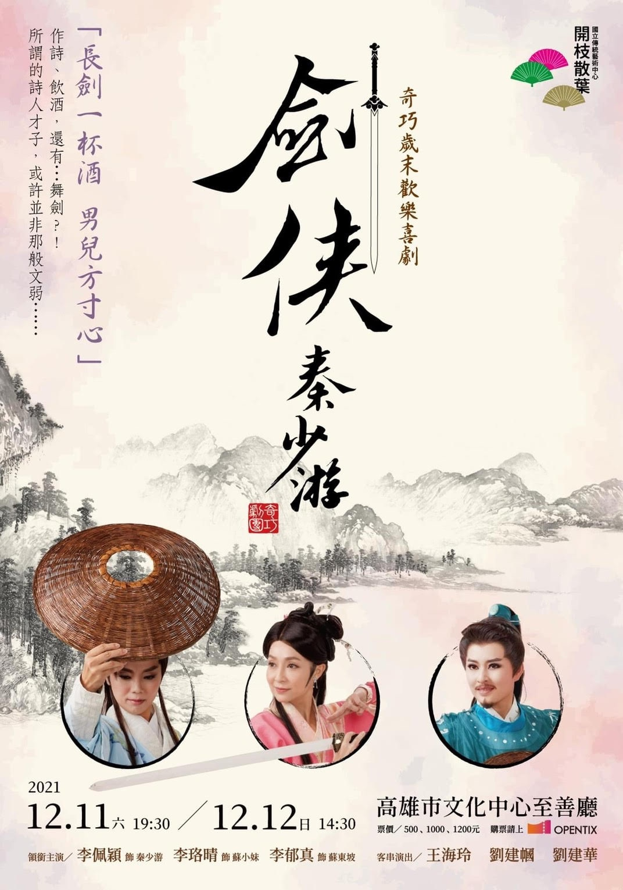
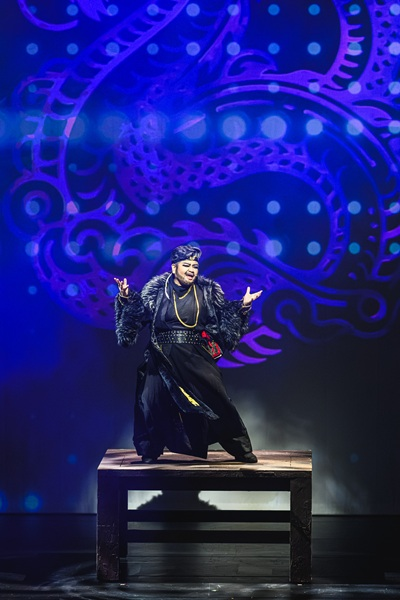
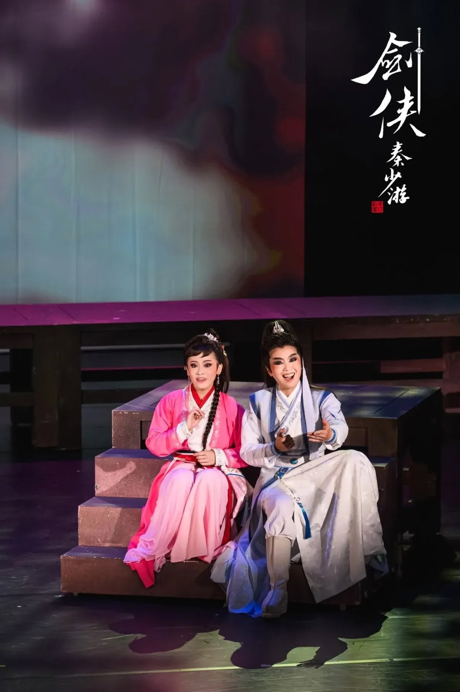
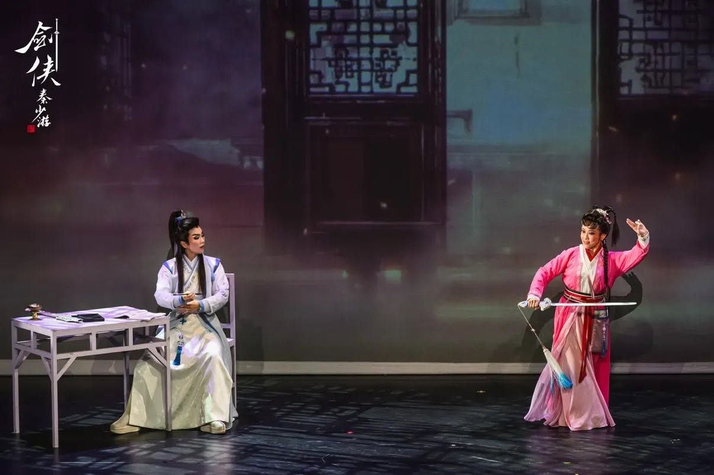
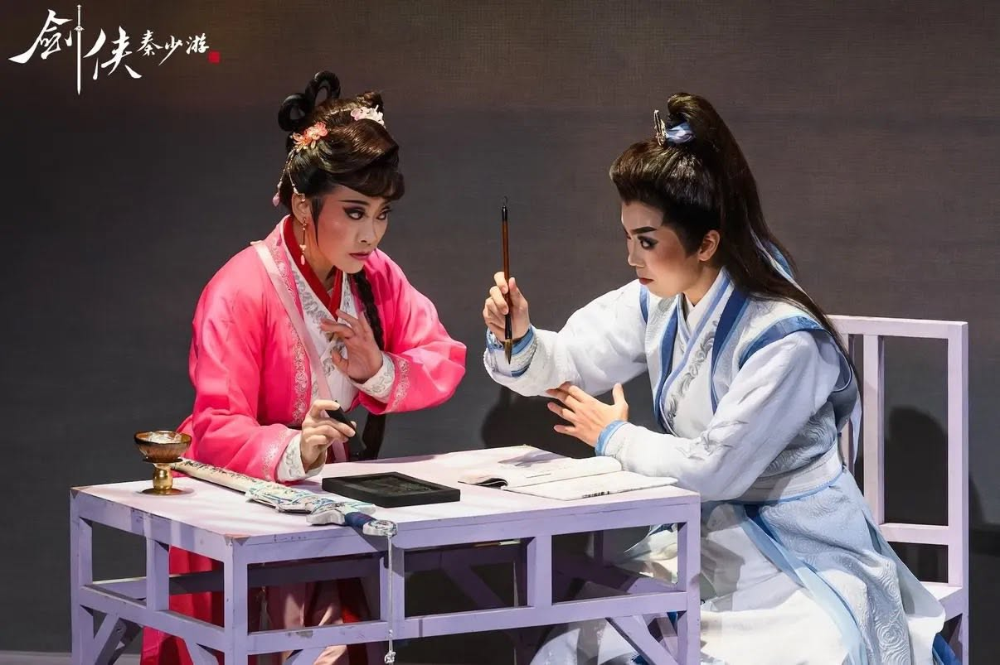
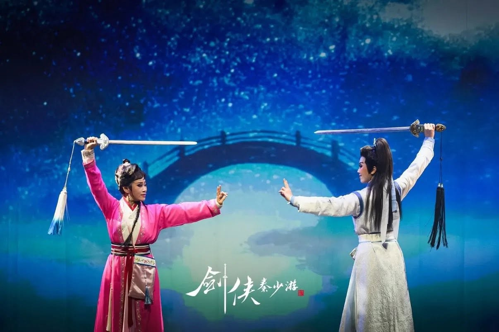

WORK · 2021
《劍俠秦少游》
奇巧歌仔戲｜製作人・編劇・導演・主演

「長劍一杯酒，男兒方寸心」
作詩、飲酒，還有...舞劍？！
所謂的詩人才子，或許並非那般文弱......
奇巧劇團以王海玲傳承經典劇目《秦少游與蘇小妹》作為故事靈感，創作奇巧歌仔戲《劍俠秦少游》。擅長翻轉故事獨樹一格的劉建幗，搬「文」弄「武」，將文質彬彬的才子佳人戲碼，改編為允文允武的武俠輕喜劇。
SYNOPSIS
劇情簡介
唐代詩仙李白，仗劍江湖人稱「詩劍雙絕」，其畢生劍法均著於《青蓮劍譜》一書之中，流傳至宋代，由蘇東坡一家保存作為家傳之寶。
可惜《青蓮劍譜》中筆畫紊亂，非圖非文，歷代無人能識，蘇小妹執著於解開劍譜之謎，竟利用自己的婚事，暗中催動進京趕考的學子共同解謎；秦少游愛劍如癡，一曲《鵲橋仙》能否贏得小妹芳心？另一廂，蘇東坡為小妹的婚事操碎了心，一心撮合少游小妹婚配，豈料卻變成肉票，幕後主使者是誰？
一本劍譜，為蘇家帶來一場荒謬的風波...。
CRITICAL RESPONSE
評論節錄
不只文武相生的交融感，輕喜劇類型的建構，依然緊守人物和道具的戲味勾織。人物方面，劉建幗飾演擾動蘇府安樂的豪強龍大，定場群舞下起鈔票雨招搖鬧台，安歌反用一系重韻味的江湖調、火炭調、雜念調。落腮鬍搭配皮草披肩跳出紗綢為主的衣裝造型，從扮相到表演質地隱約混合了淨、丑兩門行當，反派懾人威勢因外型設定和表演造成的反差帶有戲謔趣味。本次蘇小妹由林芸丞飾演，扮相英氣，眼波流轉嬌俏，唱唸圓潤甜美。武戲表現令人驚豔，開場的快節奏劍擊過招流暢，塑造出明確的人物性格。兩場戀愛戲充分刻劃出心動而糾結的少女情思。道具方面，貫穿始末的《青蓮劍譜》觸發可見及不可見的衝突，無人可解的寶物埋下伏筆，劇中人物因之各自有戲。劍譜如稜鏡，折射出蘇小妹的執迷、蘇軾的規矩、龍大的蒐集欲望、秦少游未遂的俠客夢。劍譜如鑰匙，連結秦少游的徹悟一瞬，漸悟情節類似關目，主角秦少游的內心節奏因頓悟由虛轉實，主線、支線、嬉鬧與戲肉於此交會，情節和表演化作一招一式貼合鑼鼓的傳統劍舞。投影出追尋和失落彼此相生的永恆圖景。
也許超譯，但最令我興味盎然的是樸實的風格選擇。本劇僅以順敘時空、線性結構、緩釋抒情幾種常見手法鋪陳，大反奇巧劇團系列作品那種實驗嬉耍無極限的姿態。是否編劇劉建幗有意以作品追索戲曲本色？讓演員在舞台透過做表創造空間隱喻，召喚劇本所在的另一重虛擬文字空間，兩者在觀眾的感知世界合一成戲。經翻轉的才子佳人故事，情節角色都輕簡，戲卻黏人。改編的真意或許不在某齣戲裡，《劍俠秦少游》的答案可能是改編不為外物，為敲響觀眾心中的鑼鼓。
蔡佩伶〈輕盈探戲境《劍俠秦少游》〉，表演藝術評論台，2023。STAGE PHOTOS
演出劇照
直式劇照


橫式劇照


